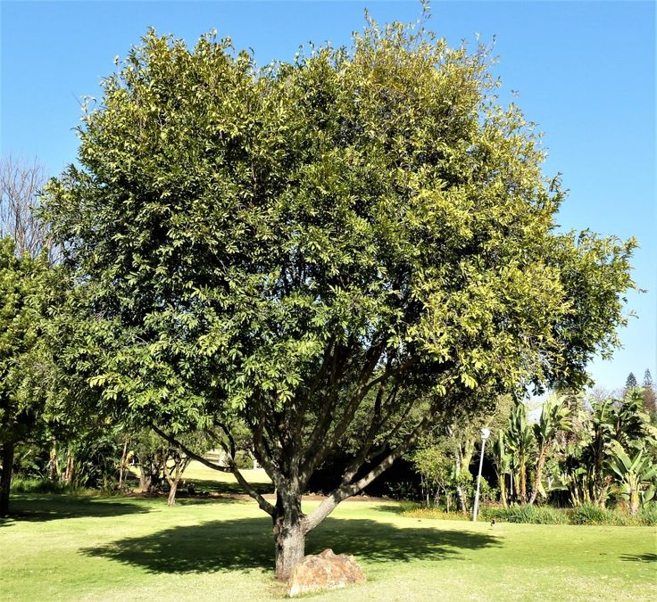
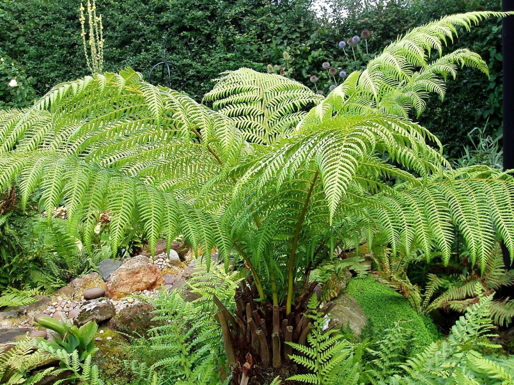
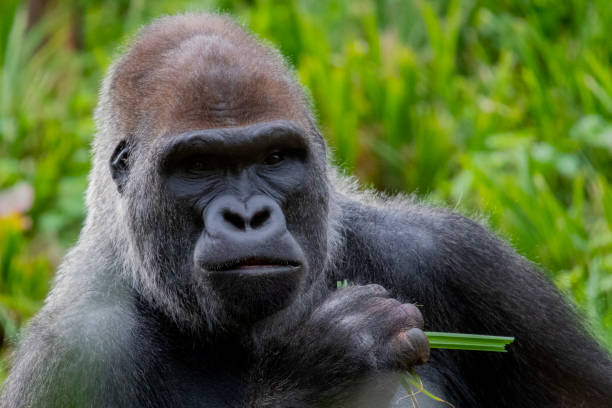
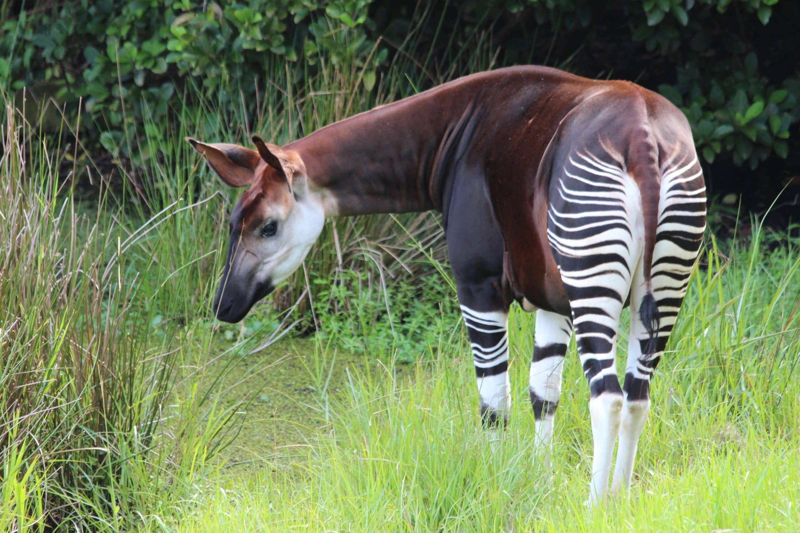

Piante
Alberi di mogano
Nome scientifico: Swietenia macrophylla
Famiglia: Meliaceae
Distribuzione: Le foreste tropicali dell'America centrale e del Sud America.
Alimentazione: Pianta a crescita rapida che trarrà beneficio dall'umidità delle foreste pluviali tropicali.
Curiosità: Il legno di mogano è molto pregiato e viene utilizzato per la costruzione di mobili di alta qualità.
 >
>
Ebano
Nome scientifico: Diospyros ebenum
Famiglia: Ebenaceae
Distribuzione: Presente principalmente nelle foreste tropicali dell'Asia, in particolare in India e Sri Lanka.
Alimentazione: Ha un forte adattamento a terreni secchi, ma preferisce suoli ben drenati e umidi.
Curiosità: Il legno di ebano è molto duro, scuro e ricercato per la sua bellezza.

Felci arboree
Nome scientifico: Cyathea spp.
Famiglia: Cyatheaceae
Distribuzione: Le foreste tropicali di tutto il mondo, specialmente nell'area del Pacifico.
Alimentazione: Pianta epifita che cresce su tronchi e rami di alberi più grandi.
Curiosità: Le felci arboree possono crescere fino a 20 metri di altezza nelle foreste pluviali.

Animali
Gorilla di pianura
Nome scientifico: Gorilla gorilla
Distribuzione: Le foreste tropicali dell'Africa centrale, specialmente in Congo e Gabon.
Alimentazione: Erbivoro, consuma foglie, frutti e piante.
Curiosità: I gorilla sono animali altamente sociali che vivono in gruppi familiari composti da un maschio dominante e diverse femmine.

Okapi
Nome scientifico: Okapia johnstoni
Distribuzione: Nativo delle foreste pluviali della Repubblica Democratica del Congo.
Alimentazione: Erbivoro, si nutre principalmente di foglie, germogli e frutti.
Curiosità: L'okapi è stato scoperto relativamente recentemente e, sebbene sembri una giraffa, è più strettamente imparentato con la zebra.

Colobo rosso
Nome scientifico: Piliocolobus rufomitratus
Distribuzione: Foreste pluviali del West e Centro Africa.
Alimentazione: Erbivoro, mangia principalmente foglie.
Curiosità: Il colobo rosso ha uno stomaco specializzato che gli permette di digerire il fogliame ricco di fibra.

Clima
Clima equatoriale: caldo e umido tutto l’anno. Piogge abbondanti (>2.000 mm/anno), temperature costanti (25–28 °C). Nessuna vera stagione secca.
Esempi
- Bacino del Congo (Repubblica Democratica del Congo, Camerun)
- Parco nazionale di Lope (Gabon)
- Foresta dell'Ituri (RD Congo)